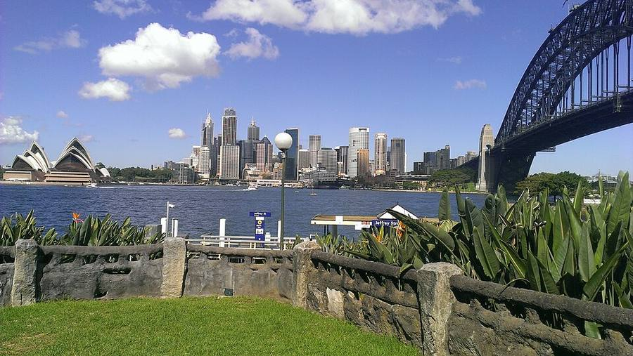
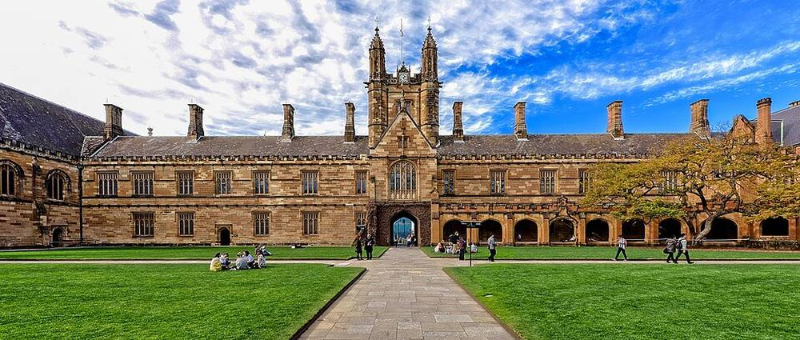
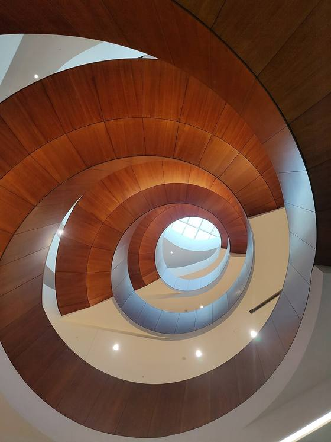

Decision brief for Peter · researched 18 Sep 2026 · USyd rules for 2027 entry
Foundation in Sydney next year, or finish the IB at home?
You are in DP1 at ISHCMC. Option A: leave after Grade 11 and do the University of Sydney Foundation Program at Taylors College, aiming for Commerce. Option B: finish the IB, where Commerce needs 38 and Economics needs 31.
Option B · StayFinish the IB at ISHCMC, graduate May 2028

Option A · GoTaylors College Foundation, Sydney, from July 2027
Recommendation
Finish the IB. Foundation doesn't buy you anything you need.
1No time saved. Both routes get you into a USyd lecture theatre in August 2028 at the earliest.
2About A$27,000 more for that one year: Taylors tuition plus Sydney living, against staying home for DP2.
3You'd trade the IB Diploma (accepted everywhere) for a certificate built to get you into one university.
4Your dream double is open at 31, not just 38. Environmental economics plus business management works inside the Bachelor of Economics.
8.5/10Foundation GPA for Commerce, plus English grade C+
Aug 2028Earliest USyd start on either route
01 · The calendar
Both routes land on the same day
You can't start Foundation until Grade 11 is finished (Taylors asks for a completed first year of the IB). ISHCMC's year ends in June 2027, so your earliest Foundation start is the July 2027 intake (12 months) or the late-September Intensive (9 months). Both finish on 30 June 2028. Meanwhile the IB route has results in early July 2028, and both USyd degrees take an August intake.
At ISHCMC, Ho Chi Minh CityAt Taylors College, SydneyUniversity of Sydney degree
The Foundation route does not arrive earlier. It swaps DP2 in Saigon for a year in Sydney and ends at the same August 2028 start. HAPP 2028 dates are not published yet; the bar uses the 2027 pattern (13 Sep to 17 Dec).
02 · Side by side
What each route actually gives you
A · Foundation (Taylors, Sydney)
B · Finish IB (ISHCMC)
You leave home
July 2027
Mid-2028 or early 2029
Earliest USyd start
Aug 2028
Aug 2028 (tight) or Feb 2029
Score for Commerce
Foundation GPA 8.5 / 10 + English C+
IB 38 (35 to 37 via HAPP)
Score for Economics
GPA 7.3 / 10 + English C+
IB 31
School credential
Foundation certificate + Grade 11 report
IB Diploma
Other countries
Mainly USyd. Other unis decide case by case
UK, US, Singapore, NYU Shanghai, all of Australia
Cost of that year
≈ A$80,500
≈ A$53,400
Living
Sydney. Under-18 welfare rules apply until you turn 18
At home
What you give up
DP2, CAS, Action for Earth, Chạm, Student Ambassador
At most, six months of Sydney head start
Track record
2025: over 90% of USFP grads eligible for a USyd offer (any degree)
You realistically expect 38+
03 · Money
The deciding year costs about A$27k more in Sydney
Surprise: ISHCMC's DP2 fee is higher than Taylors' tuition. The gap comes from living in Sydney.
Taylors: 2027 USFP Standard tuition A$49,800 + A$370 enrolment + A$350 e-textbooks; living cost is Taylors' own ~A$30,000 estimate. ISHCMC: 2026-27 Grade 12 fee (2027-28 not published yet) at 18,492 VND per A$ (17 Sep 2026). Not included: flights, health cover (OSHC), homestay placement, visa fees.
04 · The big confusion
Is economics part of business?
In ideas, they overlap. At USyd, they are two separate faculties that let you borrow from each other. You already live this in the IB: Economics HL and Business Management HL are different subjects that share a lot of vocabulary.
Economics asks how a whole market or country uses scarce resources. Business asks how one organisation competes inside that market. Finance, analytics and pricing sit in both.At USyd the two sit in different faculties, but each degree can take a second major or minor from the other side. That is how "business major + econ minor" and "econ major + business minor" both exist.
University
Where economics lives
What that means for you
Sydney (USyd)
School of Economics, Faculty of Arts & Social Sciences. Business School is separate.
Two different degrees (BCom 38, BEc 31) that cross-borrow majors and minors.
UNSW
School of Economics sits inside UNSW Business School.
There, economics really is "part of business". Same faculty, same school culture.
Melbourne
Faculty of Business and Economics.
Economics is a major inside the Bachelor of Commerce.
05 · Majors and minors, decoded
A USyd degree is 24 units. You choose how to fill them.
144 cpA 3-year degree. Most units are 6 credit points, so about 24 units, 4 per semester.
Major48 cp = 8 units in one area, climbing from 1000 to 3000 level.
Minor36 cp = 6 units. A lighter second specialty.
Shared poolUSyd's list of majors and minors any degree can borrow ("Table S"). EARE, Economics, Finance and Management are all on it.
Can I do a business major with an econ minor?
YesIn the Bachelor of Commerce. USyd's 2027 BCom page lists Economics as a second major or minor option.
Can I do an econ major with a business minor?
YesIn the Bachelor of Economics. You add a second major or minor from the Business School, e.g. Finance or Management & Leadership.
Can I get environmental economics + business management?
Yes, two waysBEc with the EARE major + Management & Leadership (needs 31), or BCom with Management & Leadership + EARE (needs 38). Plans 1 and 2 below.
Can I switch from Economics to Commerce later?
MaybeInternal transfers exist (apply 1 Oct to 1 Dec for Semester 1). USyd publishes no minimum mark, and changing course affects your visa paperwork. Don't plan on it.
Does the degree name matter to employers?
SometimesCPA / Chartered Accountant accreditation runs through the BCom accounting path. Economist and policy roles lean on the BEc's full econometrics sequence. Consulting, banking and corporate roles hire both.
Anything changing before I arrive?
YesCommerce got four new core units for 2027. Banking and Business Law majors are listed for 2027 but not 2028, so don't build a plan on them.
Plan 1 · Commerce: Management & Leadership + EARE
Needs IB 38
Core: Pro Success
Core: Acct & Fin
Core: Problem Solving
Core: Data Analytics
Mgmt 1
Mgmt 2
Mgmt 3
Mgmt 4
Mgmt 5
Mgmt 6
Mgmt 7
Mgmt 8
ECON1001
ECON1002
AREC2005
ECOS2001
AREC3006
ECOS3013
AREC3007
ECOS3991
OLE
Elective
Elective
Elective
Business-first degree title, with environmental economics as a full second major. EARE is in the shared pool in the 2026 handbook; confirm it's open to Commerce students in your intake year.
Plan 2 · Economics: EARE major + Management & Leadership
Needs IB 31
ECON1001
ECON1002
ECMT1010
ECMT1020
ECMT2150
ECOS2001
ECOS2002
AREC2005
AREC3006
ECOS3013
AREC3007
ECOS3991
Mgmt 2k
Mgmt 2k
Mgmt 2k
Mgmt 3k
Mgmt 3k
Mgmt 3k
Swap elective
Swap elective
OLE
Elective
Elective
Elective
This is the closest match to "Environmental Economics + Business Management", at a 7-point buffer below your expected score. Real units: AREC2005 Concepts in Environmental and Agricultural Economics, ECOS3013 Environmental Economics, AREC3007 Benefit-Cost Analysis. BEc students taking a Business School major swap its 1000-level units for 12 cp of electives.
Plan 3 · Commerce: Finance major + Economics minor
Needs IB 38
Core: Pro Success
Core: Acct & Fin
Core: Problem Solving
Core: Data Analytics
Fin 1
Fin 2
Fin 3
Fin 4
Fin 5
Fin 6
Fin 7
Fin 8
ECON1001
ECON1002
Econ 2k
Econ 2k
Econ 3k
Econ 3k
OLE
Elective
Elective
Elective
Elective
Elective
The classic "business major, econ minor". USyd's Finance major is a CFA Program Partner route. Leaves room for electives like Sustainability.
Degree coreBusiness School unitsSchool of Economics unitsOpen Learning (OLE) and electives
Illustrative layouts built from the 2026 handbooks and 2027 course pages. Unit codes shown are real; "Mgmt 1" style boxes are placeholders. Exact rules follow the handbook for the year you start.
06 · Real people, real routes
What these degrees and pathways have led to

Main Quadrangle, Camperdown campus. Where both routes end up.

Abercrombie Building, home of the Business School.
Glenn Stevens
Degree
USyd Bachelor of Economics, First Class Honours (1979)
Became
Governor of the Reserve Bank of Australia, 2006 to 2016
The classic BEc story: an econometrics-heavy degree leading to the top of economic policy. Proof the "31 degree" is not the lesser one.
Margaret Zhang
Degree
USyd Bachelor of Commerce and Bachelor of Laws
Became
Editor-in-Chief of Vogue China (former); filmmaker and creative director
A Commerce degree doesn't lock you into accounting. It works as a launchpad for very different careers.
Taylors 2024 top performers
Result
Foundation GPA 9.2 or higher
Offers
Yijing: BCom · Yunwen: BCom/Laws · Quang Minh and Taeyun: Advanced Computing/Commerce · Ba Phong, Minh Phuong: Computing, Science
Foundation to Commerce works for students near the top of the cohort. Commerce needs 8.5, close to that top band. In 2025, over 90% of USFP grads were eligible for a USyd offer, not necessarily Commerce.
Where EARE graduates go
USyd lists
Environmental economist, policy analyst, commodities and futures trader, adviser, journalist, merchant and trading banker
Especially
Energy and environmental consulting firms, government regulators
This is the Action for Earth version of economics: climate, energy, water and resources, with real numbers behind the policy.
07 · Gap check
What you meet, what's at risk
Requirement (2027 entry)
Needed
You
Status
IB total, Commerce
38
Expect 38+
On track, no buffer
IB total, Economics
31
Expect 38+
Met, 7-point buffer
English
IELTS Academic 7.0, no band below 6.0 (or TOEFL iBT 96) for both degrees
IB English B HL
At risk USyd's concordance table maps English B HL grade 7 to IELTS 6.5 only. Plan to sit IELTS.
Maths
BEc assumes NSW Mathematics Advanced. BCom: no assumed knowledge
Check your IB maths course
Check For its maths prerequisite, USyd accepts IB Math AA SL or HL, or AI HL (SL 5 / HL 4). If you take AI SL, plan extra maths prep.
Bản phân tích cho Peter và gia đình · nghiên cứu ngày 18/9/2026 · theo quy định tuyển sinh USyd năm 2027
Sang Sydney học Dự bị từ năm sau, hay học hết IB ở nhà?
Peter đang học năm đầu chương trình IB (DP1, lớp 11) tại ISHCMC. Lựa chọn A: nghỉ sau lớp 11, sang Sydney học chương trình Dự bị Đại học của Đại học Sydney (USyd) tại Taylors College, nhắm vào ngành Thương mại. Lựa chọn B: học hết IB; ngành Thương mại cần 38 điểm IB, ngành Kinh tế học cần 31 điểm.
Lựa chọn B · Ở lạiHọc hết IB tại ISHCMC, tốt nghiệp tháng 5/2028
Lựa chọn A · ĐiDự bị tại Taylors College, Sydney, từ tháng 7/2027
Khuyến nghị
Nên học hết IB. Chương trình Dự bị không mang lại điều gì Peter thực sự cần.
1Không vào đại học sớm hơn. Cả hai lộ trình đều bắt đầu học tại USyd sớm nhất vào tháng 8/2028.
2Tốn thêm khoảng A$27.000 (khoảng 500 triệu đồng) cho năm đó: học phí Taylors cộng chi phí sống ở Sydney, so với ở nhà học lớp 12.
3Mất bằng IB (được công nhận trên toàn thế giới) để đổi lấy một chứng chỉ chủ yếu chỉ dùng để vào một trường đại học.
4Hướng học mơ ước chỉ cần 31 điểm, không phải 38. Kinh tế môi trường kết hợp quản trị kinh doanh học được ngay trong bằng Cử nhân Kinh tế học.
38điểm IB vào Cử nhân Thương mại (tuyển sinh 2027)
31điểm IB vào Cử nhân Kinh tế học (tuyển sinh 2027)
8,5/10điểm GPA Dự bị cần cho ngành Thương mại, kèm tiếng Anh C+
8/2028Sớm nhất vào USyd, dù chọn lộ trình nào
Giải thích nhanh các thuật ngữ
IB (Tú tài Quốc tế)Chương trình 2 năm cuối cấp (lớp 11 và 12) Peter đang học. Tổng điểm tối đa 45.
DP1 / DP2Năm thứ nhất (lớp 11) và năm thứ hai (lớp 12) của chương trình IB.
Dự bị Đại học (Foundation, USFP)Khóa 9 đến 12 tháng tại Taylors College ở Sydney, học thay lớp 12, dùng để vào Đại học Sydney.
HAPPKhóa ngắn 14 tuần của Taylors cho học sinh đã tốt nghiệp IB nhưng thiếu tối đa 3 điểm so với yêu cầu ngành.
BCom / BEcCử nhân Thương mại (khối kinh doanh) / Cử nhân Kinh tế học.
Chuyên ngành chính / phụMajor / minor: chính là 8 môn, phụ là 6 môn trong cùng một lĩnh vực.
IELTSBài thi tiếng Anh. Hai ngành này cần 7.0, không kỹ năng nào dưới 6.0.
CASPhần hoạt động bắt buộc của IB: Sáng tạo, Vận động, Phục vụ cộng đồng.
01 · Lịch trình
Hai lộ trình về đích cùng một thời điểm
Peter chỉ có thể bắt đầu Dự bị sau khi học xong lớp 11 (Taylors yêu cầu hoàn thành năm đầu IB). Năm học ở ISHCMC kết thúc tháng 6/2027, nên sớm nhất là khóa tháng 7/2027 (12 tháng) hoặc khóa cấp tốc cuối tháng 9/2027 (9 tháng). Cả hai đều kết thúc ngày 30/6/2028. Trong khi đó, lộ trình IB có điểm thi vào đầu tháng 7/2028, và cả hai ngành ở USyd đều có kỳ nhập học tháng 8.
Tại ISHCMC, TP.HCMTại Taylors College, SydneyHọc đại học tại USyd
Đi Dự bị không giúp vào đại học sớm hơn: chỉ đổi năm lớp 12 ở Sài Gòn thành một năm ở Sydney, rồi cũng nhập học tháng 8/2028. Lịch HAPP năm 2028 chưa công bố; thanh trên biểu đồ dựa theo lịch năm 2027 (13/9 đến 17/12).
02 · So sánh
Mỗi lộ trình thực sự mang lại gì
A · Dự bị (Taylors, Sydney)
B · Học hết IB (ISHCMC)
Rời nhà
Tháng 7/2027
Giữa năm 2028 hoặc đầu năm 2029
Sớm nhất vào USyd
Tháng 8/2028
Tháng 8/2028 (gấp) hoặc tháng 2/2029
Điểm vào Thương mại
GPA Dự bị 8,5/10 + tiếng Anh C+
IB 38 (35 đến 37 qua HAPP)
Điểm vào Kinh tế học
GPA 7,3/10 + tiếng Anh C+
IB 31
Bằng cấp phổ thông
Chứng chỉ Dự bị + học bạ lớp 11
Bằng IB
Du học nước khác
Chủ yếu chỉ USyd. Trường khác xét từng trường hợp
Anh, Mỹ, Singapore, NYU Thượng Hải, mọi trường ở Úc
Chi phí năm đó
≈ A$80.500 (~1,49 tỷ đồng)
≈ A$53.400 (~988 triệu đồng)
Nơi ở
Sydney. Dưới 18 tuổi phải có người hoặc đơn vị bảo trợ được duyệt
Ở nhà
Phải bỏ lại
Lớp 12, CAS, Action for Earth, Chạm, vai trò Đại sứ Học sinh
Nhiều nhất là 6 tháng làm quen Sydney sớm
Kết quả thực tế
2025: hơn 90% học viên Dự bị đủ điều kiện nhận thư mời của USyd (ngành bất kỳ)
Peter dự kiến đạt 38+
03 · Chi phí
Năm quyết định tốn thêm khoảng A$27.000 (~500 triệu đồng) nếu ở Sydney
Điều bất ngờ: học phí lớp 12 ở ISHCMC còn cao hơn học phí Taylors. Khoản chênh lệch đến từ chi phí sống ở Sydney.
Taylors: học phí khóa Dự bị tiêu chuẩn 2027 là A$49.800 + A$370 phí ghi danh + A$350 sách điện tử; chi phí sống theo ước tính của Taylors khoảng A$30.000. ISHCMC: học phí lớp 12 năm học 2026-27 (năm 2027-28 chưa công bố), quy đổi 18.492 đồng/A$ (ngày 17/9/2026). Chưa tính: vé máy bay, bảo hiểm y tế du học sinh (OSHC), phí homestay, phí visa.
04 · Điều hay nhầm lẫn
Kinh tế học có phải là một phần của kinh doanh không?
Về kiến thức, hai ngành giao nhau. Tại USyd, đây là hai khoa riêng biệt nhưng sinh viên được học chéo. Peter đã quen với điều này ở IB: Kinh tế HL và Quản trị Kinh doanh HL là hai môn khác nhau nhưng dùng chung nhiều khái niệm.
Kinh tế học nghiên cứu cách cả một thị trường hay một quốc gia sử dụng nguồn lực khan hiếm. Kinh doanh nghiên cứu cách một doanh nghiệp cạnh tranh trong thị trường đó. Tài chính, dữ liệu và định giá thuộc cả hai.Ở USyd, hai ngành thuộc hai khoa khác nhau, nhưng mỗi bằng đều được lấy chuyên ngành thứ hai hoặc chuyên ngành phụ từ khoa bên kia. Nhờ vậy mới có cả hai kiểu "chính kinh doanh, phụ kinh tế" và "chính kinh tế, phụ kinh doanh".
Trường
Kinh tế học thuộc đâu
Ý nghĩa với Peter
Sydney (USyd)
Trường Kinh tế thuộc Khoa Nghệ thuật & Khoa học Xã hội. Trường Kinh doanh là đơn vị riêng.
Hai bằng khác nhau (BCom 38, BEc 31) nhưng được học chéo chuyên ngành.
UNSW
Trường Kinh tế nằm bên trong Trường Kinh doanh UNSW.
Ở đây kinh tế đúng là "một phần của kinh doanh", cùng một khoa.
Melbourne
Khoa Kinh doanh và Kinh tế.
Kinh tế học là một chuyên ngành bên trong bằng Cử nhân Thương mại.
05 · Chuyên ngành chính và phụ
Một bằng cử nhân ở USyd gồm khoảng 24 môn. Sinh viên tự chọn cách sắp xếp.
144 tín chỉBằng 3 năm. Mỗi môn thường 6 tín chỉ, tức khoảng 24 môn, 4 môn mỗi học kỳ.
Ngành chính48 tín chỉ = 8 môn trong một lĩnh vực, từ cấp 1000 lên cấp 3000.
Ngành phụ36 tín chỉ = 6 môn. Một hướng chuyên sâu thứ hai, nhẹ hơn.
Danh mục chungDanh sách chuyên ngành mà mọi bằng đều được chọn ("Table S"). Có cả Kinh tế học, EARE, Tài chính và Quản trị.
Học chính kinh doanh, phụ kinh tế được không?
ĐượcTrong Cử nhân Thương mại. Trang ngành BCom 2027 của USyd liệt kê Kinh tế học là lựa chọn chuyên ngành thứ hai hoặc phụ.
Học chính kinh tế, phụ kinh doanh được không?
ĐượcTrong Cử nhân Kinh tế học: thêm chuyên ngành thứ hai hoặc phụ từ Trường Kinh doanh, ví dụ Tài chính hoặc Quản trị & Lãnh đạo.
Học được kinh tế môi trường + quản trị kinh doanh không?
Được, 2 cáchBEc với chuyên ngành EARE + Quản trị & Lãnh đạo (cần 31), hoặc BCom với Quản trị & Lãnh đạo + EARE (cần 38). Xem Phương án 1 và 2 bên dưới.
Sau này chuyển từ Kinh tế học sang Thương mại được không?
Có thểUSyd cho phép chuyển ngành nội bộ (nộp từ 1/10 đến 1/12 cho học kỳ 1), nhưng không công bố điểm tối thiểu, và việc chuyển ngành ảnh hưởng đến hồ sơ visa. Không nên dựa vào cách này.
Tên bằng có quan trọng với nhà tuyển dụng không?
Đôi khiChứng chỉ kế toán CPA / CA đi qua lộ trình kế toán của BCom. Vị trí kinh tế gia, hoạch định chính sách thiên về BEc vì có đủ chuỗi môn kinh tế lượng. Tư vấn, ngân hàng, doanh nghiệp tuyển cả hai.
Có gì thay đổi trước khi Peter nhập học không?
CóNgành Thương mại có 4 môn cốt lõi mới từ 2027. Chuyên ngành Ngân hàng và Luật Kinh doanh có trong năm 2027 nhưng không có trong năm 2028, nên không lập kế hoạch dựa vào hai ngành này.
Phương án 1 · Thương mại: Quản trị & Lãnh đạo + EARE
Cần IB 38
Cốt lõi: Kỹ năng nghề
Cốt lõi: Kế toán & TC
Cốt lõi: Giải quyết vấn đề
Cốt lõi: Phân tích dữ liệu
Quản trị 1
Quản trị 2
Quản trị 3
Quản trị 4
Quản trị 5
Quản trị 6
Quản trị 7
Quản trị 8
ECON1001
ECON1002
AREC2005
ECOS2001
AREC3006
ECOS3013
AREC3007
ECOS3991
OLE
Tự chọn
Tự chọn
Tự chọn
Tên bằng thiên về kinh doanh, có kinh tế môi trường là chuyên ngành thứ hai đầy đủ. EARE nằm trong danh mục chung theo sổ tay 2026; cần xác nhận sinh viên Thương mại được chọn EARE vào năm nhập học.
Phương án 2 · Kinh tế học: EARE + Quản trị & Lãnh đạo
Cần IB 31
ECON1001
ECON1002
ECMT1010
ECMT1020
ECMT2150
ECOS2001
ECOS2002
AREC2005
AREC3006
ECOS3013
AREC3007
ECOS3991
Quản trị 2000
Quản trị 2000
Quản trị 2000
Quản trị 3000
Quản trị 3000
Quản trị 3000
Tự chọn thay thế
Tự chọn thay thế
OLE
Tự chọn
Tự chọn
Tự chọn
Đây là phương án gần nhất với "Kinh tế Môi trường + Quản trị Kinh doanh", với khoảng cách an toàn 7 điểm so với điểm Peter dự kiến. Môn học thật: AREC2005 Khái niệm Kinh tế Môi trường và Nông nghiệp, ECOS3013 Kinh tế Môi trường, AREC3007 Phân tích Chi phí và Lợi ích. Sinh viên BEc chọn chuyên ngành của Trường Kinh doanh sẽ thay các môn cấp 1000 của chuyên ngành đó bằng 12 tín chỉ môn tự chọn.
Phương án 3 · Thương mại: chính Tài chính + phụ Kinh tế học
Cần IB 38
Cốt lõi: Kỹ năng nghề
Cốt lõi: Kế toán & TC
Cốt lõi: Giải quyết vấn đề
Cốt lõi: Phân tích dữ liệu
Tài chính 1
Tài chính 2
Tài chính 3
Tài chính 4
Tài chính 5
Tài chính 6
Tài chính 7
Tài chính 8
ECON1001
ECON1002
Kinh tế 2000
Kinh tế 2000
Kinh tế 3000
Kinh tế 3000
OLE
Tự chọn
Tự chọn
Tự chọn
Tự chọn
Tự chọn
Kiểu "chính kinh doanh, phụ kinh tế" quen thuộc. Chuyên ngành Tài chính của USyd là đối tác chính thức của chương trình CFA. Vẫn còn chỗ cho môn tự chọn như Phát triển bền vững.
Môn cốt lõi của bằngMôn của Trường Kinh doanhMôn của Trường Kinh tếMôn tự do (OLE) và tự chọn
Sơ đồ minh họa dựa trên sổ tay 2026 và trang ngành 2027. Mã môn là mã thật; các ô như "Quản trị 1" chỉ là ví dụ. Quy định chính xác theo sổ tay của năm nhập học.
06 · Người thật, lộ trình thật
Những bằng cấp và lộ trình này đã dẫn đến đâu
Main Quadrangle, khuôn viên Camperdown. Cả hai lộ trình đều kết thúc ở đây.Tòa Abercrombie, nơi đặt Trường Kinh doanh.
Glenn Stevens
Bằng cấp
Cử nhân Kinh tế học USyd, Honours hạng Nhất (1979)
Sự nghiệp
Thống đốc Ngân hàng Dự trữ Úc (RBA), 2006 đến 2016
Câu chuyện kinh điển của bằng BEc: nặng về kinh tế lượng, dẫn đến vị trí cao nhất trong chính sách kinh tế. Chứng minh bằng "31 điểm" không hề kém hơn.
Margaret Zhang
Bằng cấp
Cử nhân Thương mại và Cử nhân Luật, USyd
Sự nghiệp
Cựu Tổng biên tập Vogue Trung Quốc; nhà làm phim, giám đốc sáng tạo
Bằng Thương mại không bó buộc vào nghề kế toán. Đây là bệ phóng cho nhiều sự nghiệp rất khác nhau.
Học viên xuất sắc nhất Taylors 2024
Kết quả
GPA Dự bị từ 9,2 trở lên
Thư mời
Yijing: BCom · Yunwen: BCom/Luật · Quang Minh và Taeyun: Máy tính Nâng cao/Thương mại · Ba Phong, Minh Phuong: Máy tính, Khoa học
Đi Dự bị rồi vào Thương mại khả thi với học viên thuộc nhóm đầu. Ngành Thương mại cần 8,5, rất gần mức nhóm đầu. Năm 2025, hơn 90% học viên Dự bị đủ điều kiện nhận một thư mời của USyd, không nhất thiết là ngành Thương mại.
Sinh viên EARE ra trường làm gì
USyd liệt kê
Chuyên gia kinh tế môi trường, chuyên viên phân tích chính sách, giao dịch viên hàng hóa và hợp đồng tương lai, cố vấn, nhà báo, chuyên viên ngân hàng đầu tư và giao dịch
Đặc biệt
Công ty tư vấn năng lượng và môi trường, cơ quan quản lý nhà nước
Đây là phiên bản kinh tế học gắn với Action for Earth: khí hậu, năng lượng, nước và tài nguyên, có số liệu thật đằng sau chính sách.
07 · Đối chiếu yêu cầu
Đã đạt gì, còn rủi ro gì
Yêu cầu (tuyển sinh 2027)
Cần
Peter
Tình trạng
Tổng điểm IB, Thương mại
38
Dự kiến 38+
Đúng hướng, không dư điểm
Tổng điểm IB, Kinh tế học
31
Dự kiến 38+
Đạt, dư 7 điểm
Tiếng Anh
IELTS Academic 7.0, không kỹ năng nào dưới 6.0 (hoặc TOEFL iBT 96) cho cả hai ngành
IB English B HL
Rủi ro Bảng quy đổi của USyd chỉ tính English B HL điểm 7 tương đương IELTS 6.5. Nên thi IELTS.
Toán
BEc yêu cầu nền tảng tương đương Toán Nâng cao (Mathematics Advanced) của bang NSW. BCom: không yêu cầu
Kiểm tra môn Toán IB đang học
Cần kiểm tra Với yêu cầu toán, USyd chấp nhận IB Math AA SL hoặc HL, hoặc AI HL (SL 5 / HL 4). Nếu học AI SL, nên ôn thêm toán.
Sydney International Student Award: giảm 20% học phí cho cả khóa học. Việt Nam thuộc diện được xét. Cần viết một bài giới thiệu ngắn (áp dụng cho sinh viên nhập học 2027).
Sydney International Undergraduate Academic Excellence Scholarship: miễn 100% học phí, khoảng 20 suất mỗi năm trên toàn thế giới. Điểm IB cao là cơ hội tốt nhất.
Các trang này không nói rõ học viên Dự bị có được xét hay không. Cần xác nhận trước khi tính đến.
Khi nào nên chọn Dự bị
Điểm dự đoán năm DP1 chỉ quanh mức 30 hoặc thấp hơn và không cải thiện.
IB đang ảnh hưởng nghiêm trọng đến sức khỏe, hoặc dù sao cũng cần rời ISHCMC.
USyd là trường duy nhất Peter cân nhắc, và muốn có một năm làm quen với Sydney.
Nếu sang Úc trước 18 tuổi, bắt buộc phải có bảo trợ được duyệt: homestay do Taylors sắp xếp (CAAW) hoặc người thân từ 21 tuổi trở lên làm người giám hộ (mẫu Form 157N).
Bước tiếp theo
Ở lại học lớp 12 (DP2) và đặt mục tiêu 38+. Báo mục tiêu này với điều phối viên IB để điểm dự đoán phản ánh đúng.
Đăng ký thi IELTS Academic vào giữa năm 2027, mục tiêu 7.0, không kỹ năng nào dưới 6.0. English B HL không đủ thay thế.
Nộp hồ sơ vào USyd trong năm lớp 12: nguyện vọng 1 là BCom, BEc (EARE) là lựa chọn an toàn, kèm học bổng Sydney International Student Award 20%.